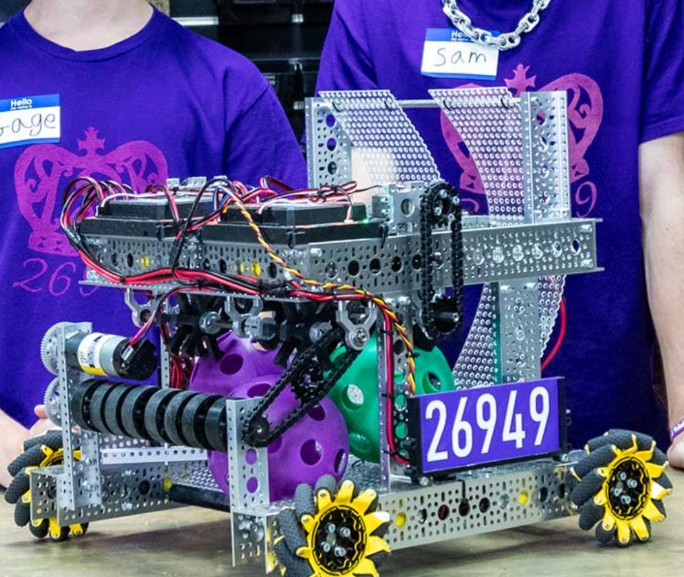
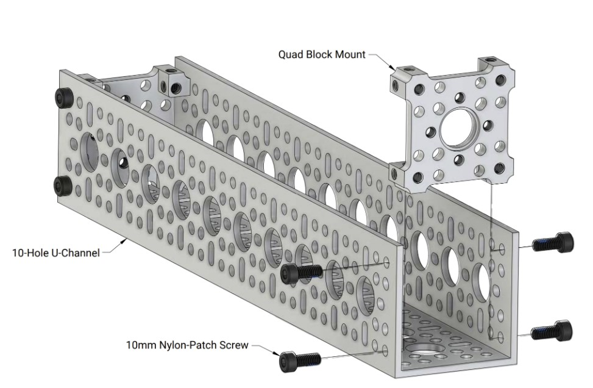
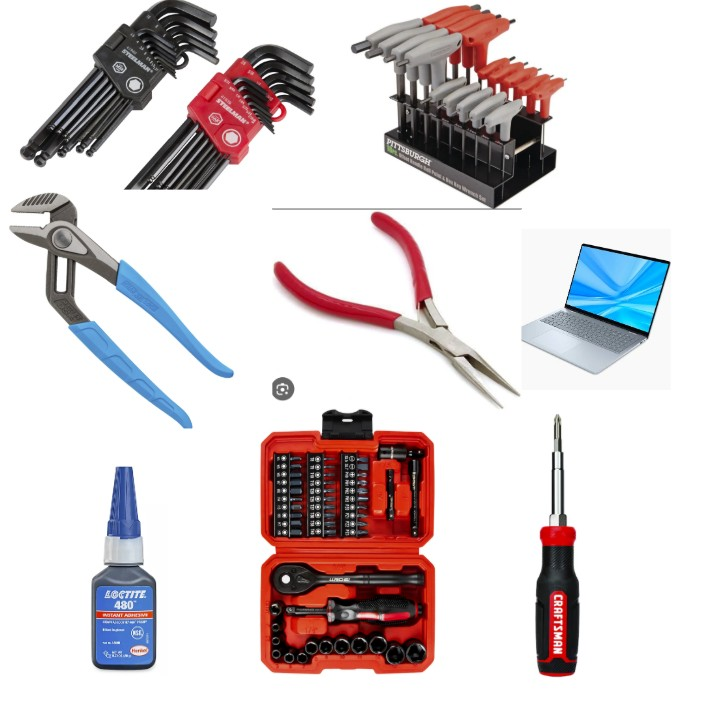
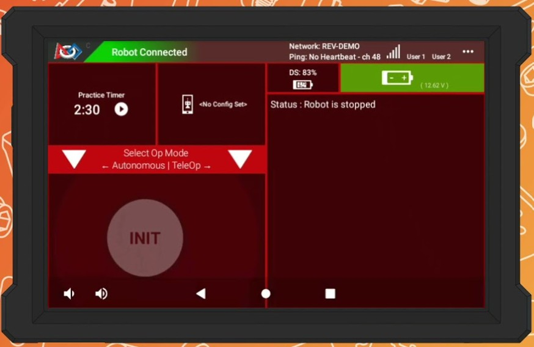
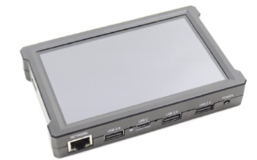
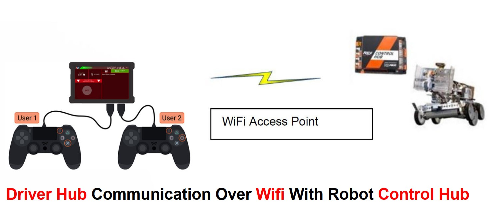
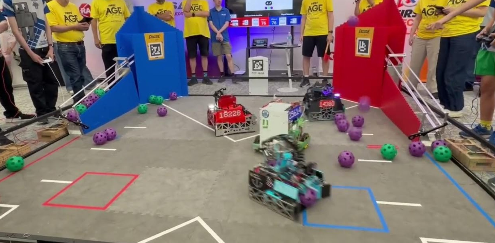

Before you write a single line of code, it helps to understand what you are actually building. An FTC robot is not one thing -- it is a system of parts that work together. This lesson walks you through every major piece, how a match works, and where you fit in as the programmer.
No coding in this lesson -- just read, explore, and take notes. By the end, you will understand what is inside the robot, what the driver sees, how a match is structured, and why your code matters.
An FTC robot is roughly the size of a milk crate -- the maximum allowed dimensions are 18 × 18 × 18 inches at the start of a match. That is small! Teams have to be creative about fitting everything into that space. Some robots expand after the match begins, but they all start inside that cube.
start of every match. Planning how everything fits is a big part of the design challenge.

Most FTC teams do not machine their own parts from raw metal. Instead, they use pre-fabricated building systems -- kits of aluminum channels, brackets, gears, and plates that bolt together like high-tech building blocks. Popular systems include goBILDA, REV Robotics, Actobotics, and Tetrix.

Students use wrenches, hex keys, and screwdrivers to bolt these parts into a custom robot. You pick the channels, cut them to length if needed, and assemble the frame, drivetrain, and mechanisms. It is hands-on engineering -- no welding or machining required.

set, FTC building systems work on the same idea -- just bigger, stronger, and made of aluminum.
Open up any FTC robot and you will find a handful of key electronics. Think of these as the robot's brain, nervous system, and power supply.
The Control Hub is the brain of the robot. It is a small rectangular box (made by REV Robotics) that runs the Android operating system and executes your Java code. It has:
When you click START on the Driver Hub, the Control Hub begins running your code. Every motor command, every sensor reading, every decision your robot makes -- it all happens here.
code, reads sensors, and controls motors and servos.
Four motor ports is often not enough. A typical FTC robot might have four drive motors, an intake motor, a shooter motor, a lift motor -- that is already seven. The Expansion Hub gives you four more motor ports, six more servo ports, and additional sensor ports.
The Expansion Hub connects to the Control Hub with a short cable. From your code's perspective, it is seamless -- you access motors on the Expansion Hub exactly the same way as motors on the Control Hub. The hardware map takes care of routing commands to the right place.
Your code talks to it the same way as the Control Hub -- no extra work needed.
Everything runs on a single 12-volt rechargeable battery. It is a chunky rectangle that straps onto the robot. A fully charged battery can power a robot through several matches, but teams usually swap in a fresh one between matches to stay safe.
The main power switch sits between the battery and the hubs. It is a big, easy-to-reach toggle -- referees require that you can power off the robot quickly if something goes wrong. When you flip the switch, everything powers up: the Control Hub boots, the Expansion Hub comes online, and the robot is ready to connect.
ready. A dying battery mid-match means a robot that slows down or stops entirely. Battery management is a real part of competition strategy.
The diagram below shows exactly how the simulator's robot is
wired. Each motor and sensor has a name (like frontLeft or
imu) -- these are the names your code uses to talk to the
hardware. The diagram also shows which hub port each device
plugs into. If you ever build a real robot to match the
simulator code, this is the wiring map you would follow to
configure your Driver Hub's hardware map.

The robot is only half the system. The other half is in the drivers' hands.
The Driver Hub is a dedicated device (also made by REV Robotics) that acts as the driver's control center. It has a touchscreen that shows:
The Driver Hub communicates with the Control Hub over Wi-Fi Direct -- a peer-to-peer wireless connection that does not need a router or internet. It pairs automatically once configured.
use to select programs, start matches, and see telemetry. It talks to the robot over Wi-Fi Direct.


Plugged into the Driver Hub's USB ports are standard game controllers -- the same kind you would use with an Xbox or PlayStation. FTC allows up to two controllers per team.
The first controller is gamepad1 in your code. The second
is gamepad2. Every button, joystick, and trigger on both
controllers is available to your program.
Why two controllers? Because driving a competitive robot is a lot to handle. Most teams split the work:
for driving, right stick for turning or strafing.
for the intake, shooter, lift, claw, or whatever the robot has.
This lets each person focus on their job. The driver watches the field and navigates. The operator watches the mechanisms and scores. Coordination between them wins matches.
and one for operating mechanisms. In your code, they are
gamepad1 and gamepad2.


Others use two controllers with completely different layouts. There is no single right answer -- it depends on the robot and the team's preference. As the programmer, you decide what each button does.
Here is where it gets exciting. The robot hardware can do a lot of things -- but it does nothing until you tell it what to do. That is your job.
You write Java code that:
raise lift?)
The robot is a blank canvas. Your code is the paint. Two teams with identical hardware can have completely different robots depending on how they are programmed. One team's A button might toggle an intake. Another team's A button might deploy a claw. It is entirely up to you.
sensor does. The same hardware can behave completely differently depending on the code running on it.
Now that you know the pieces, let's talk about what happens when you actually compete.
An FTC field is a 12 × 12 foot square made of interlocking foam tiles. It is surrounded by walls and has game-specific elements -- goals, scoring zones, markers, and obstacles that change every season. Two alliances compete on the field at the same time.
Each match has four robots -- two on the Red Alliance and two on the Blue Alliance. You and your alliance partner work together to score more points than the other alliance. Communication and teamwork between alliance partners is a big part of FTC.
At a tournament, you will be paired with different partners for different matches. You might be with a strong team one match and a brand-new team the next. Adaptability matters.
Blue). You and your alliance partner cooperate to outscore the opposing alliance.

Every FTC match has two phases, and they are very different:
1. Autonomous Period (30 seconds)
The match begins with autonomous mode. During this phase, no human touches the controllers. The robot runs entirely on pre-programmed instructions. It might drive forward, read a sensor, score a game piece, or park in a specific zone -- all without any human input.
Autonomous points are often worth more than tele-op points, so a good autonomous program can decide a match before the drivers even pick up their controllers.
2. Tele-Op Period (2 minutes)
After autonomous ends, the drivers grab their controllers and take over. This is tele-op (short for tele-operated) -- the human-controlled phase. For two minutes, the drivers maneuver the robot around the field, scoring as many points as possible.
Tele-op is where your button assignments, control schemes, and telemetry feedback really matter. Smooth driving, quick mechanism control, and good operator coordination are the difference between a mediocre match and a great one.
no human control) and Tele-Op (2 minutes, driver controlled). Different code runs in each phase.
The two-phase structure tests different skills:
that navigates the field, reads sensors, and scores reliably -- with zero human help?
Can the drivers and the code work together smoothly under pressure?
In your code, you will write separate programs (called OpModes) for each phase. The autonomous OpMode runs first, then the drivers switch to the tele-op OpMode for the rest of the match. The simulator lets you practice both.
tournaments -- even if their tele-op is average. Those free 30 seconds of scoring with no opponent interference are incredibly valuable.
Let's trace the path of a single action to see how everything connects:
Driver Hub
Control Hub
gamepad1.a == trueAll of that happens in a fraction of a second, dozens of times per second. The loop runs so fast that the robot feels instantly responsive to the driver.
Control Hub → your code → motor. This loop runs many times per second, making the robot feel responsive in real time.
Here is a summary of every major component:
| Component | What It Does | |-----------|-------------| | Control Hub | Robot's brain -- runs your code, controls motors/servos/sensors | | Expansion Hub | Extra motor, servo, and sensor ports | | Battery (12V) | Powers everything on the robot | | Power Switch | Turns the robot on and off (must be accessible) | | Driver Hub | Touchscreen for selecting programs and viewing telemetry | | Controllers | USB gamepads (up to 2) plugged into the Driver Hub | | Motors | Spin wheels, intakes, shooters, lifts | | Servos | Move claws, flippers, and other small mechanisms | | Sensors | Detect distance, color, orientation, and more |
together -- no welding or machining needed
everything on the robot
are not enough
start programs and see telemetry
one for driving and one for mechanisms
blank canvas
12 × 12 foot field
Tele-Op (2 minutes) is human-controlled
Control Hub to your code to motors -- many times per second
Now you know what is inside the robot, what the driver sees, and how a match works. Next up: you will write your first line of code and see it appear on the Driver Hub.
to continue!